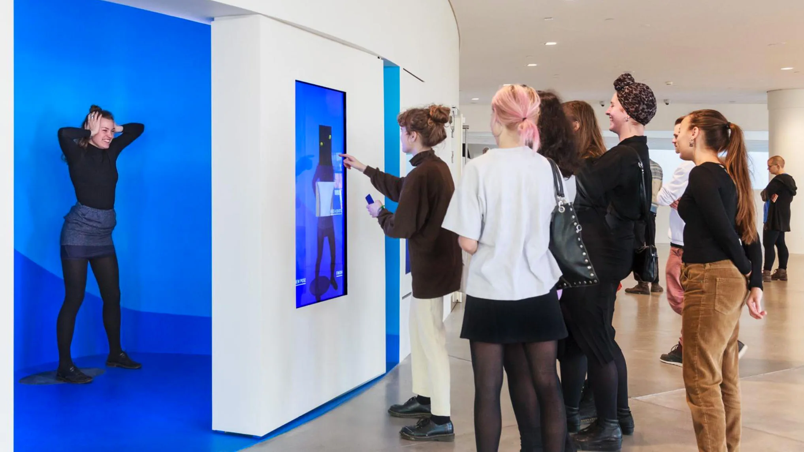
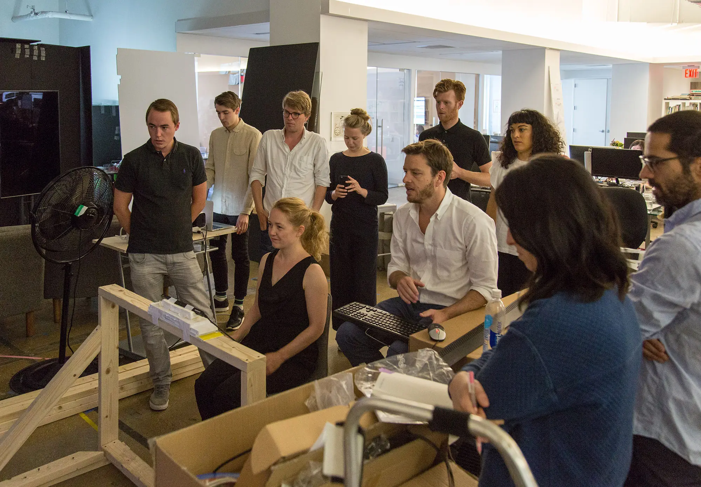
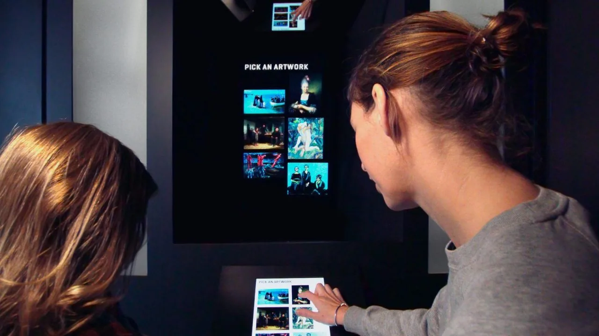
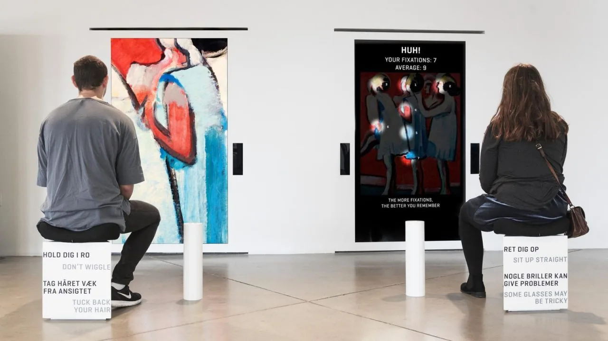
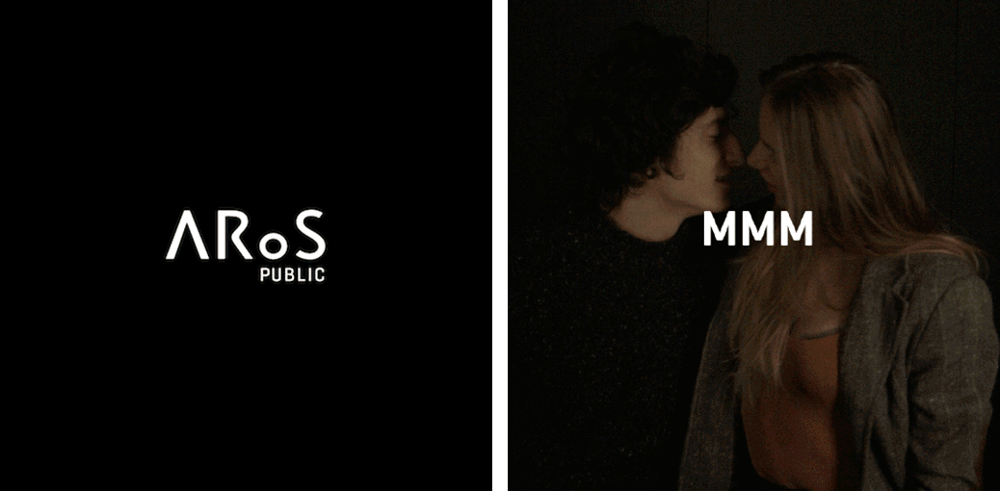

ARoS Kunstmuseum
Aarhus, Denmark
Under Director Erlend Aalbæk Høyersten, ARoS Aarhus Art Museum framed itself as a mental fitness centre. It aimed to train perception, creativity and social awareness.
ARoS holds more than 8,000 works. Only a fraction can be displayed at any time. ARoS Public opened access to the broader collection and shifted visitors from passive viewers to active participants.

As UX lead at Local Projects, I shaped the experience from early vision through prototyping. I focused on sequencing, flow and tone. I worked to ensure the tools and technologies we used served a clear purpose.


We developed participatory installations including a portrait machine that layered visitors into the collection through live collage, and a multilingual story booth using speech-to-text and thematic playback to surface shared ideas across languages.
Eye tracking and real-time language processing were new at the time. We iterated extensively to ensure the experiences felt intuitive and fun.


The result positioned the visitors as contributors within the museum.
The project treated the museum not just as a place to display art, but as a space where ideas circulate between artworks and visitors. Participation, curiosity and a sense of play became part of how the collection could live beyond the walls of the gallery.